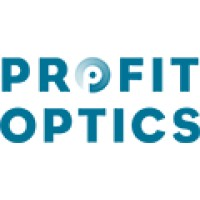
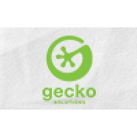

CONTACT INFO
Click to revealABOUT ME
I am an experienced software engineer, specialized in game development and full stack web development. I have spent 4 years working on one unreleased and two live mobile games in Unity engine (C#). I previously worked for 5 years as a full stack web developer, building public websites and internal tools in a variety of technologies, including PHP and Vue.js.
I have a passion for code design and architecture, automated testing, mentoring, knowledge sharing, UX, and game design.
-
Lead Software Engineer
Two Desperados · Full-time / Belgrade, Serbia / Feb 2023 - Present
-
Senior Software Engineer
Two Desperados · Full-time / Belgrade, Serbia / Oct 2022 - Feb 2023
-
Senior Software Developer
Oxyverse · Contract / Belgrade, Serbia / Jun 2022 - Jul 2022 · 2 months
I joined an indie game team as a front-end Unity (C#) developer for a set period of time, and was tasked with some feature work as well as improving the project quality in general. During this time, I mostly employed my learnings about development tools and code design.
Main learning:
- How to locally build Unity games for iOS and distribute them via TestFlight.
Greatest achievements:
- In-engine tools to speed up development and testing of the game;
- Some reusable utility code to facilitate development;
- Improvements to the maintainability of existing code;
- Created internal testing and deployment pipeline for the iOS version of the game.
Skills:
Game Development · Code Design · Tools Development · Refactoring · Unity · C# · Git
-
Software Development Engineer - Top Eleven
Nordeus · Full-time / Belgrade, Serbia / Jul 2020 - Apr 2022 · 1 year 10 months
Worked as a Unity game developer on the mobile free-to-play sports game Top Eleven. I owned game client development within the Live Ops team. Conquered challenges related to working on a live popular flagship product, such as careful planning, code design, and coordination between teams.
I joined a product team that worked on the mobile free-to-play sports game Top Eleven, as a front-end game developer, working in Unity (C#). I owned game client development within the Live Ops team. The technology was already familiar to me, but the development processes were completely new, carefully maintaining an already mature, stable, profitable game in production. Additionally, development on the product was split into four product teams all contributing to the same codebase (plus the Marketing team), so coordinating development was a greater challenge and there was a greater focus on communication.
Main learnings:
- How to more carefully plan and design features before touching the codebase, rather than rushing to code, as well as some specific processes like Event Storming;
- How to more deeply collaborate with my peers, share my work early, and better utilize their help, especially in the planning and code design phases;
- How to carefully consider game updates, backwards compatibility, and transitional states between versions;
- How to design and properly utilize feature switches;
- How to be more proactive in communication, and keep the team synced about my work;
- Domain-driven design, and in general about good code design and keeping the codebase easy-to-maintain in the long term, doing things "the right way" without compromise via hacks;
- Continued to learn about code testability and automated testing, and learned TDD, in the process learned to refactor code without affecting functionality, and to split my work into ever-smaller commits.
Greatest achievements:
- Mentoring more peers into valuable and effective team members;
- Advocating for automated testing among my discipline;
- Learning about technical observability and helping advocate it among my discipline;
- Pushing for data usage to be considered more carefully by the whole team;
- Shared knowledge with the team and discipline by documenting my learnings.
Skills:
Game Development · Code Design · DDD · Automated Testing · TDD · Documentation · Unity · C# · Git · Knowledge Sharing · Mentoring · Pair Programming · Event Storming
-
Software Development Engineer - Heroic
Nordeus · Full-time / Belgrade, Serbia / Nov 2018 - Jun 2020 · 1 year 8 months
Worked as a Unity game developer on the mobile free-to-play strategy game Heroic. Collaborated with and supported other disciplines, made design decisions, and got involved with the community. Saw the game through several stages of development, from beta to sunsetting.
I transitioned into a front-end game development role, working in Unity (C#), and joined the product team that worked on the mobile free-to-play strategy game Heroic - Magic Duel. It was a fast-paced agile work environment, which required us to be highly pragmatic, delivering very quickly while maintaining an acceptable level of quality and technical stability, and oftentimes required developers to make minor product and design decisions. I was there for several phases of development, from preparing a soft launch, to maintaining the game in production, to sunsetting it.
Main learnings:
- How to collaborate with back-end developers and define API contracts, and learned about Google Protobuf in the process;
- How to collaborate with other disciplines, like artists, game designers, etc, and in the process learned a little bit about game design;
- I learned a little bit about monetization and the business side of game development, including profitability, user acquisition, scalability, retention, LTV, user segments, etc;
- How to speed up development by building development tools;
- I learned about problems with compatibility between server and client code, and how to avoid them;
- Pre-release and release processes of mobile apps, on both Android and iOS.
Greatest achievements:
- I became super interested and user-focused in development and played the game regularly, and as a result got involved in the game community and advocated for them, and suggested technical and game design improvements to the rest of my team;
- I became proactive in development, discovering ways I could help other disciplines be more productive or make better choices, and continually improving the health of the codebase by introducing minor tech improvements whenever possible.
Skills:
Game Development · Tools Development · Documentation · Unity · C# · Git
-
Software Development Engineer - CRM
Nordeus · Full-time / Belgrade, Serbia / Apr 2018 - Oct 2018 · 7 months
Worked as a full-stack web developer on a one stop software solution (CRM + support + analytics) and related services. My tech stack was PHP and Vue.js.
Worked in a service team as a full-stack web developer, working on a new all-in-one CRM + support dashboard + analytics dashboard, and a few related services. It was an interesting experience operating for the first time in a service team with high autonomy, clear responsibilities and priorities and quality bar, with reliably set delivery expectations. The technologies were Vue.js on the front end, and PHP + Symfony framework on the back end.
Main learning:
- Modern web development, specifically Vue.js on the front end.
Skills:
Tools Development · Web Development · Vue.js · PHP · Symfony Framework · Git
-
Software Developer
Profit Optics, Inc. · Part-time / Belgrade, Serbia / Jun 2017 - Mar 2018 · 10 months
A part-time job where I worked on developing sales/business intelligence tools, in a full-stack web development role, mostly using .NET technologies and classic front-end web tech.
Main learnings:
- .NET technologies including C#, Entity framework and SQL server;
- How to develop Microsoft Outlook add-ins;
- Learned about analyzing and solving performance issues.
Skills:
Web Development · Documentation · C# · SQL · Git
-
Software Development Engineer - Web & Internal Tools
Nordeus · Full-time / Belgrade, Serbia / Sep 2013 - Mar 2017 · 3 years 7 months
Worked as a full-stack web developer on a variety of projects including public web pages and internal tools. Became a jack-of-all trades with the variety of tech used, mostly PHP with a classic front-end web stack.
Worked in multiple service teams tasked with developing public websites (www.nordeus.com, www.topeleven.com, Facebook game pages, Nordeus Hackathon pages), internal tools (support dashboards, localization tools and services, analytics dashboards, HR software, a game testing dashboard, an info screen app, a group management dashboard, a hub for internal tools, etc), and maintaining some features for the product teams.
Main learnings:
- Became proficient in an array of different technologies including PHP, Symfony framework, HTML, CSS, Bootstrap, Javascript, jQuery, SQL (mostly Postgres), Bash, Ansible, Python, Flash (ActionScript), and Unity Engine (C#);
- Basic development processes (like dependency management tools, version control, code review, testing, deployment, etc);
- The Agile mindset and Scrum practices;
- How to gather requirements, plan long projects, prioritize work, estimate tasks and manage my time;
- How to mentor my peers and interview job candidates;
- How to contribute to the open source community;
- Developing testable code and automated testing;
- Automated provisioning and deployment with Ansible;
- Communicating and collaborating with outsourcers.
Greatest achievements:
- Quickly getting up-to-speed, becoming an efficient and effective contributor, able to own and spearhead non-trivial projects;
- Developing several internal tools that were praised and utilized for years to come (especially localization tools and services, analytics dashboards, and HR software);
- Successfully mentoring colleagues that subsequently became valuable team members.
Skills:
Tools Development · Web Development · Automated Testing · PHP · Symfony Framework · SQL · Bash · Git · Mentoring
-
Software Developer Intern
Gecko Solutions · Internship / Belgrade, Serbia / Jul 2013 - Sep 2013 · 3 months
A part-time internship, where I was tasked with client work, in a full-stack web development role. The technologies used were Ruby, HTML, CSS, and javascript.
Main learnings:
- Self-education, as I learned to independently get up-to-speed, gather documentation, and implement features;
- Scrum practices;
- Version control (specifically SVN);
- Dependency management (Ruby-specific);
- Building a CRUD API.
Skills:
Web Development
-
Bachelor of Engineering - Computer and Information Sciences
University of Belgrade, School of Electrical Engineering · Oct 2009 - Oct 2019
Grade: 8.29 (out of 10)
Bachelor's thesis:
"Drupal module for importing and aggregating data from SugarCRM"
Projects:
- Developed a bot that plays reversi implementing the Minimax algorithm (Java, May 2013).
- Developed a basic but functional compiler for the MicroJava programming language (Java, January and February 2013).
- Developed a video game in a team of six, for the Global Game Jam held in Belgrade (Unity 3D engine with C# scripting, 25th - 27th of January 2013).
- Developed a basic but functional operating system kernel for 8086 CPU architecture, focused on multiprogramming and hardware interrupts and events (C++, August and September 2012).
- Co-developer of the second place bot for the MDCS BubbleBot v.0 competition (C++, November and December 2011).
SKILLS
Industry Knowledge
- Game Development
- Tools Development
- Web Development
- Code Design
- Architecture
- DDD
- Refactoring
- Automated Testing
- TDD
- Documentation
Technologies
- Unity
- C#
- Vue.js
- PHP
- Symfony Framework
- SQL
- Bash
- Git
Soft Skills
- Knowledge Sharing
- Mentoring
- Pair Programming
- Event Storming
Languages
- English (native-bilingual)
- Serbian (native-bilingual)